ホーム

ブロックの順と中身はそのまま。白い面と細い線が、紙の地・インクの輪郭・ドットの見出しに変わります。連続記録にはサイトの炎の住人「ボッ」が出ます。
アプリの見本 · 2026年10月29日
アプリの「スタンダード」を、紹介サイトと同じ紙・インク・ライムとドット絵の住人で作り直したときの見本です。今のスタンダードはこわさず、そのまま「クラシック」として残します。鯉の池・サメの海・歩く人の背景は、最初の版（MVP）には入れません。これは HTML で見た目を確かめるためのもので、アプリのコードはまだ何も変えていません。
画面を押すと、その画面が開きます（ボタンも押せます）どの画面も、いちばん下の「一覧へ」でここに戻れます
iPhone（390×844）で撮った最初の1画面。中身は見本のアカウント「はる」
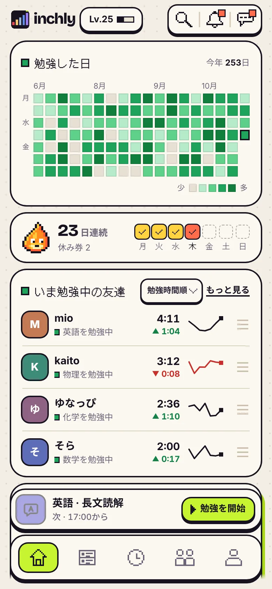
ホーム勉強していないとき。主役は「今日の勉強」の1枚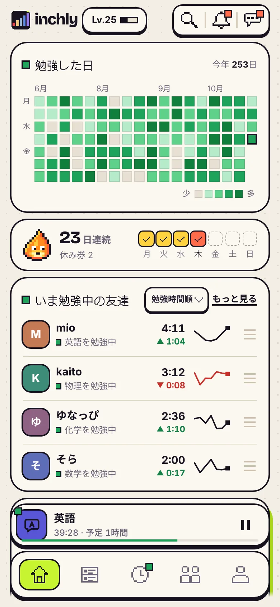
ホーム（勉強中）下のバーで時間が進む。❚❚ で一時停止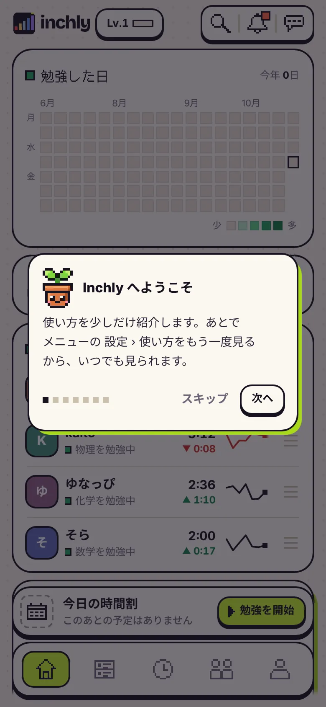
ホーム（はじめての人）まだ空の草と、使い方の案内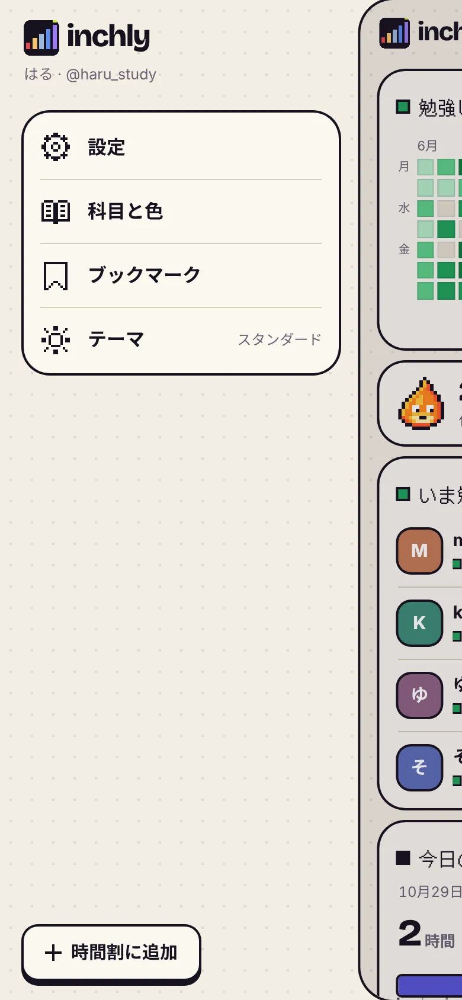
サイドメニューホームを右へすべらせると出る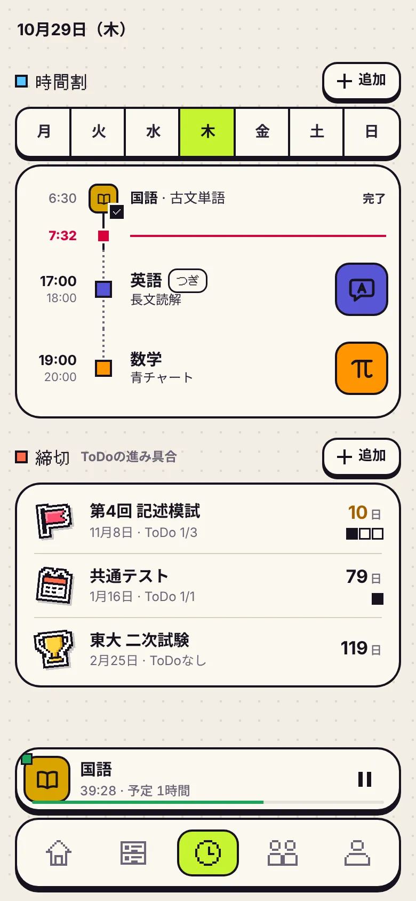
勉強今日の時間割と締切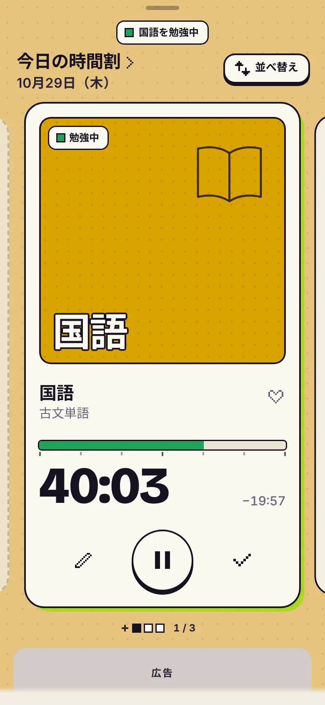
タイマー予定ごとのカード。横にすべらせる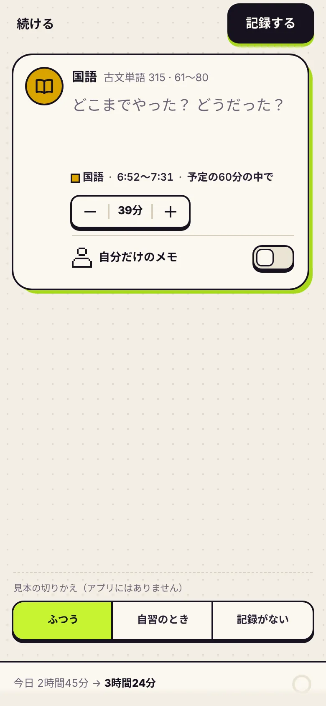
記録シートタイマーの ✓ のあと。メモを書いて記録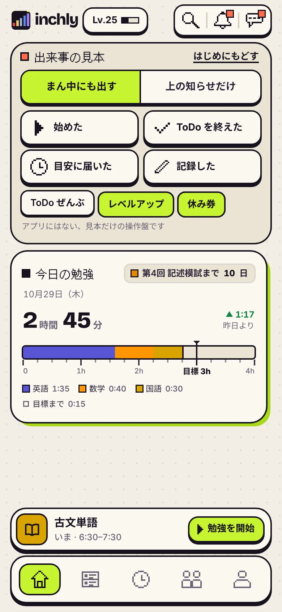
出来事始めた・記録した などで出る住人とお知らせ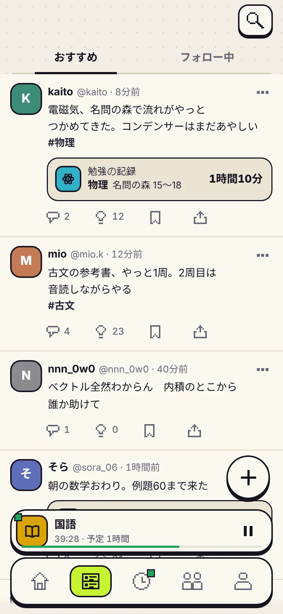
タイムライン友達の投稿と勉強の記録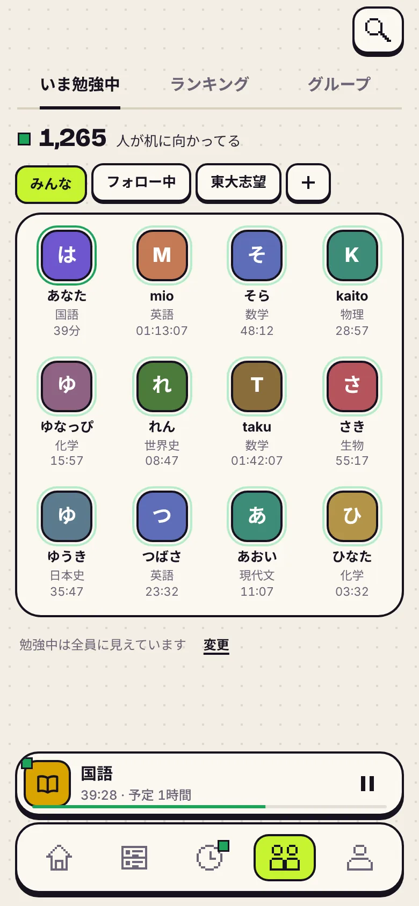
みんないま勉強中・ランキング・グループ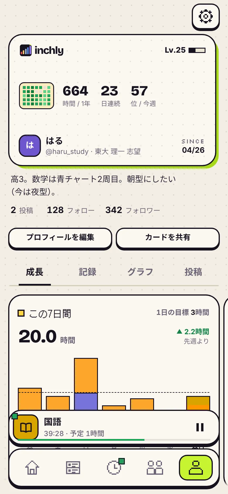
マイページ成長・記録・グラフ・投稿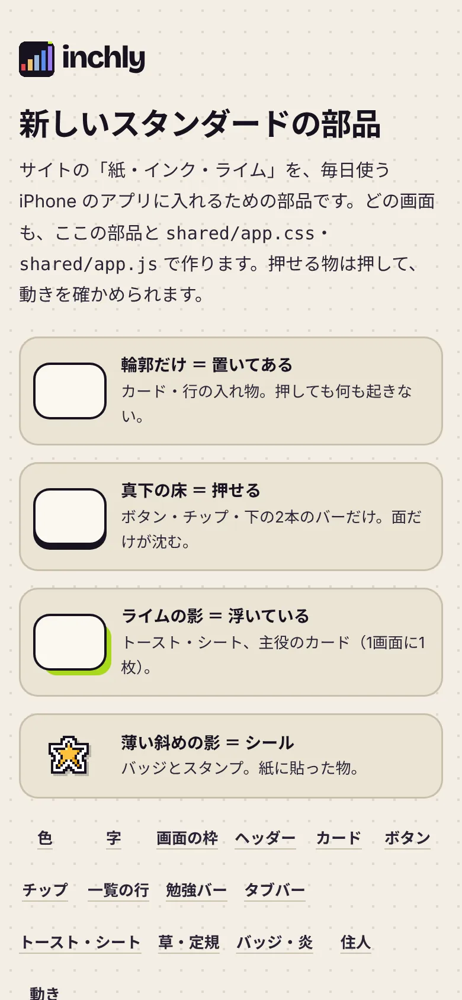
部品の一覧色・字・ボタン・バーなど、ぜんぶの部品左が今のアプリ（クラシックとして残る）、右が新しいスタンダード
ブロックの順と中身はそのまま。白い面と細い線が、紙の地・インクの輪郭・ドットの見出しに変わります。連続記録にはサイトの炎の住人「ボッ」が出ます。

予定ごとのカードと、大きな時間・進みの線・真ん中の丸ボタンは同じ。うしろは科目の色を紙に混ぜた地になり、勉強中の線は草と同じ緑です。
見本は、それぞれ下の「この見本では」で作ってあります
この見本では止まった絵のまま。記録したときなど、出来事のときだけ顔が 0.2 秒でふっと変わります。まばたき・歩く・はねるは入れていません。
アプリの動きの決まりでは、くり返す動きや跳ねる動きには特別な許可が要るためです。止まっていても、サイトと同じ6匹が同じ顔で出れば「あのサイトのアプリ」とわかります。
見る所：出来事
この見本ではサイトの炎の住人「ボッ」1つを、ゆっくりした揺れ（片道 2.4 秒）だけで出します。0日の日は灰色の眠った顔で止まります。メモにある「11段の炎」は使っていません。
炎の揺れは、アプリで1つだけ許されている動きです。11段の炎は絵が11枚要り、段の意味（マッチ→銀河など）も決める必要があります。
見る所：ホーム
この見本では紙の面にインクの輪郭と真下の黒い床をつけた、透けないバー。今のすりガラスは、ホームの説明にある「下のバーをすりガラスで見る」で比べられます。
紙の地の上ではガラスにしても透けて見えるのは紙だけで、良さが出ません。「床がある＝押せる」の決まりにも合い、ぼかしを使わないぶん軽くなります。
見る所：ホーム（いちばん下の説明）
この見本では勉強中＝草と同じ緑、一時停止＝今のアプリの紅。ライムは「始める」と「選んでいる」だけ。グラフは科目の色だけで、緑は使いません。サイトの「コーラル＝勉強中」は持ってきていません。
今の蛍光の緑は紙の上でほとんど見えず、ライムとも混ざります。草と同じ緑なら「勉強する→草が伸びる」とつながります。コーラルは紅（止めた）に近く、意味が逆に見えるので、未読の点だけにしました。
見る所：ホーム（勉強中）の下のバーで ❚❚
この見本では白いフチ＋インクの輪郭＋右下に薄い影の「シール」。まだ取っていないバッジは灰色で薄く出します。
真下の濃い影は「押せる」印なので、シールは斜めの薄い影にして見分けられるようにしました。サイトのドット絵とインクの輪郭にも合います。
見る所：マイページ
この見本では今のアプリの線の絵（英語＝A の吹き出し、数学＝π、国語＝本 など）をインクの線で、科目の色の四角に入れます。サイトの「科目の顔」は使っていません。
科目は時間割やバーで1画面にいくつも並びます。目のある顔が並ぶと住人と役がぶつかり、うるさくなります。
見る所：勉強